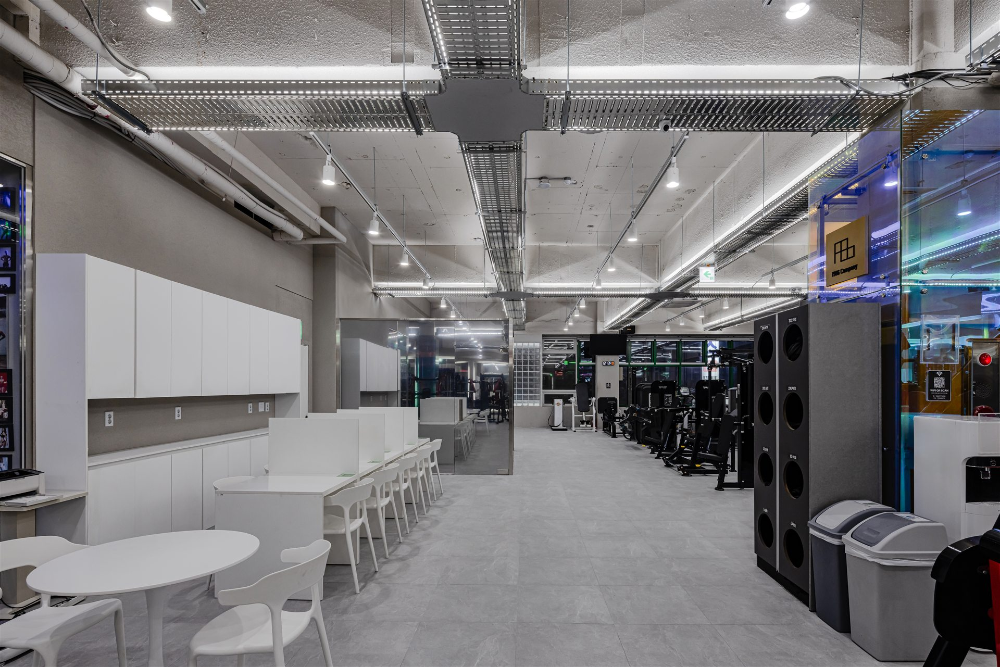
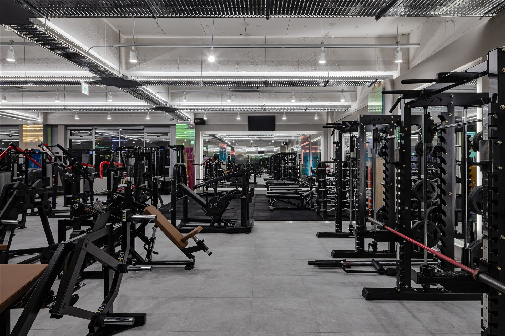
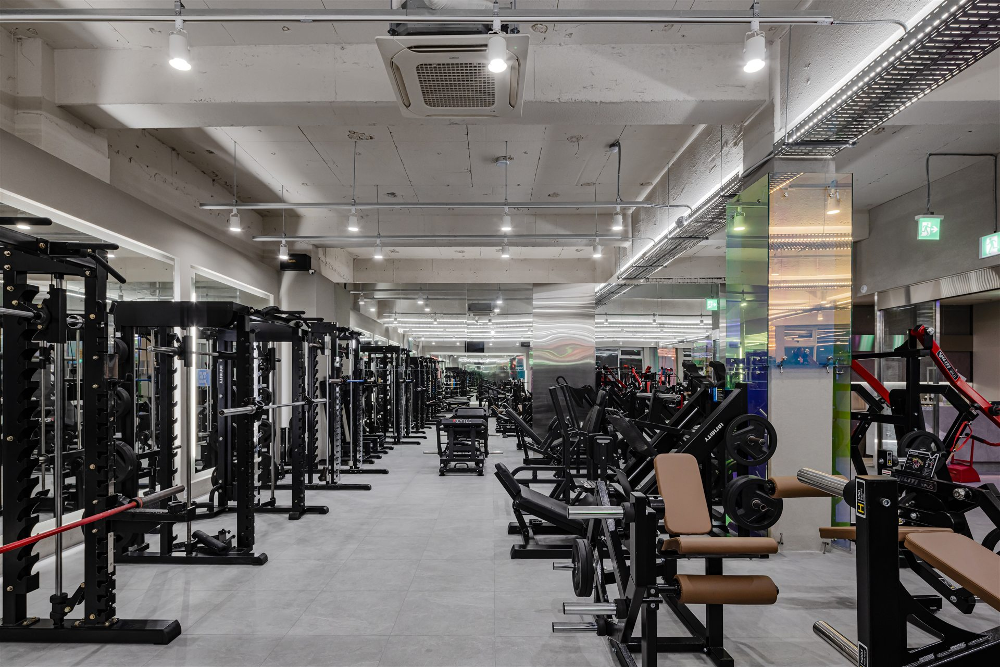

02 / OFFICIAL BLOG ↗


블로그
최신 발행물
최신 발행물
최근 게시물 4개입니다. 사진을 누르면 해당 글 원문으로 이동합니다.

1986 FITNESS · JUNGSAN
중산동에서 운동을 시작하는 가장 가까운 방법
중산에서 운동이 이어지는 이유를 만듭니다.
처음이라도, 다시 시작해도 괜찮게.
24시간 운영 표기 · 매월 둘째 일요일 휴무
방문 전 전화로 최신 운영 정보를 확인해주세요.
STAY UPDATED
운영 안내와 센터 소식은 네이버 플레이스에서, 운동 이야기와 발행물은 중산점 공식 블로그에서 원문으로 확인할 수 있습니다.
 NAVER PLACE MAIN PHOTO
NAVER PLACE MAIN PHOTO
운영 안내·센터 소식·최신 사진을 네이버 플레이스에서 확인하세요.

02 / OFFICIAL BLOG ↗최근 게시물 4개입니다. 사진을 누르면 해당 글 원문으로 이동합니다.
게시물 제목과 게시일은 공식 RSS를 기준으로 매시간 자동 갱신됩니다.
1986피트니스가 공개한 맞춤 코칭 방향을 세 단계로 보여드립니다. 구체적인 중산점 프로그램과 트레이너 정보는 지점 자료 확인 후 연결됩니다.
운동 경험, 생활 패턴, 불편한 움직임을 먼저 살펴봅니다.
무엇을 왜 하는지 이해할 수 있도록 운동 방향을 정리합니다.
센터 밖에서도 운동이 이어지도록 내 수준에 맞는 흐름을 만듭니다.
중산점에서 직접 촬영한 실제 공간입니다. 운동 구역부터 스트레칭존, 라커와 샤워 시설까지 방문 전에 확인해보세요.

04 / VISIT JUNGSAN
공개된 운영 정보는 변동될 수 있습니다. 방문 전에 전화로 최신 운영 시간과 상담 가능 여부를 확인해주세요.
05 / START FINDER
하나를 고르면 첫 방문에서 확인할 순서를 보여드립니다.
생활 리듬과 운동 경험을 먼저 확인하고, 기구와 공간에 익숙해지는 순서로 시작합니다.